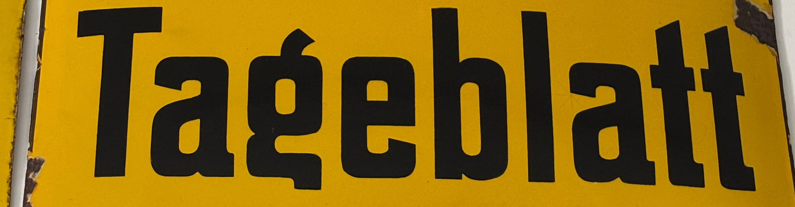

TAGEBLATT-TYPE
Tageblatt est une police de caractères conçue à partir de l'observation de plaques commerciales disséminées au travers de l'ÉSAD. En partant des caractères existants, il a fallu concevoir le reste de l'alphabet en trouvant les modules dans les lettres de départ. Le caractère a ensuite été uniformisé pour plus de cohérence.

 portez ce vieux whisky au juge blond qui fume.
the quick brown fox jumps over the lazy dog.
portez ce vieux whisky au juge blond qui fume.
the quick brown fox jumps over the lazy dog.